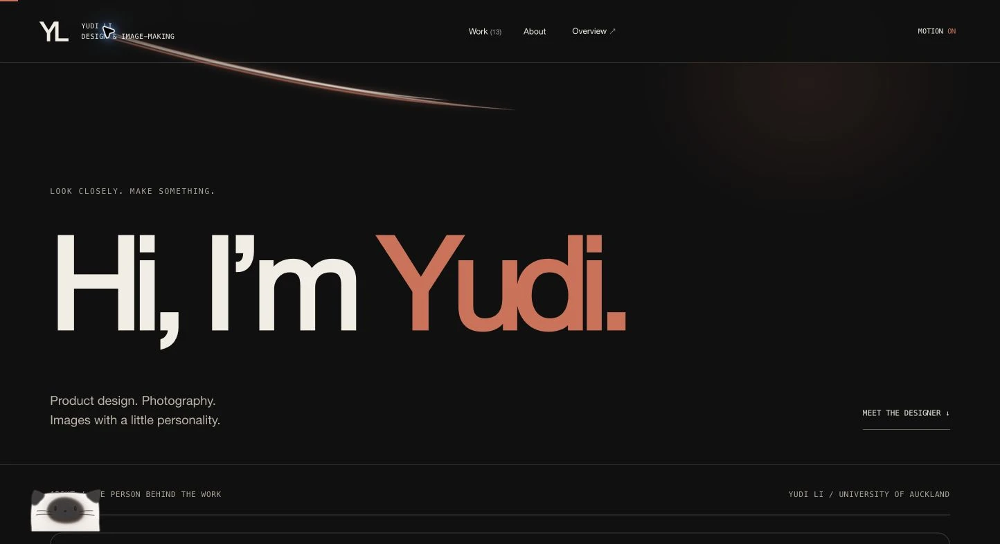
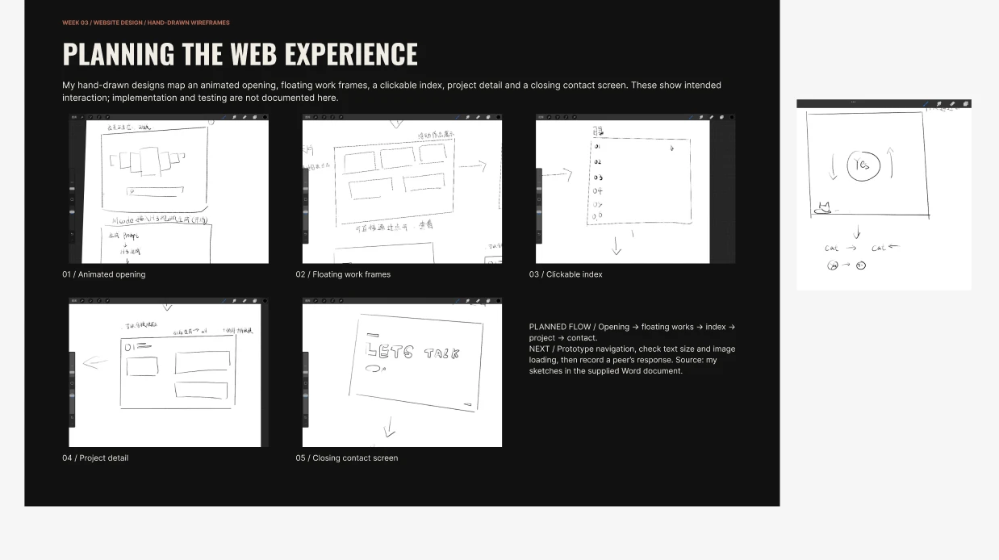
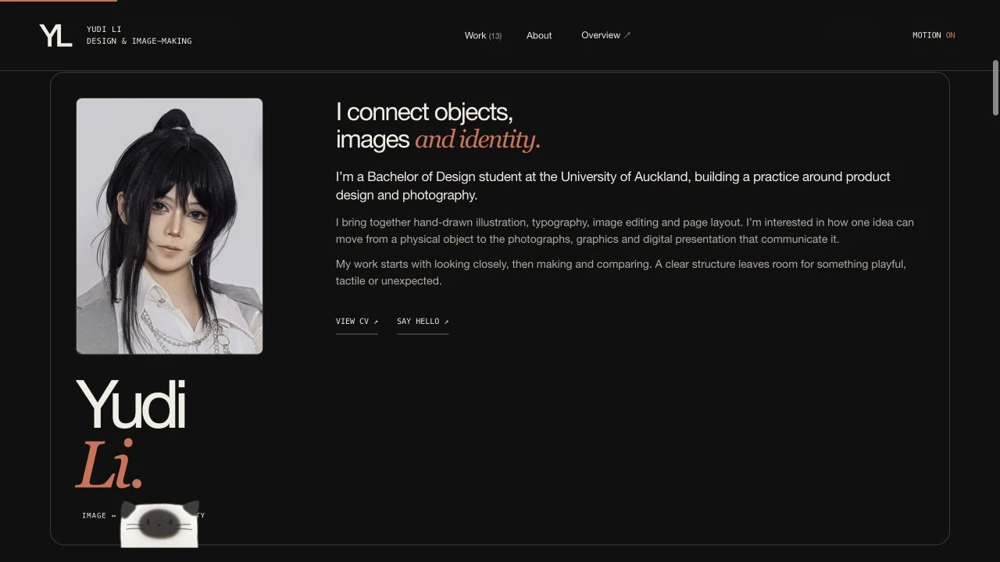
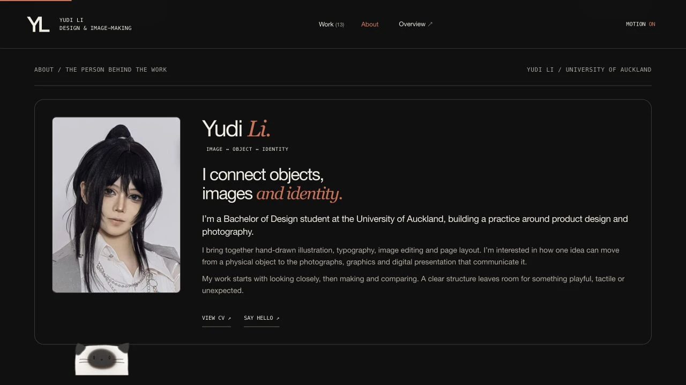
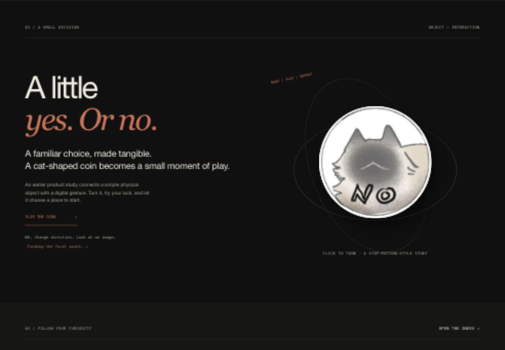
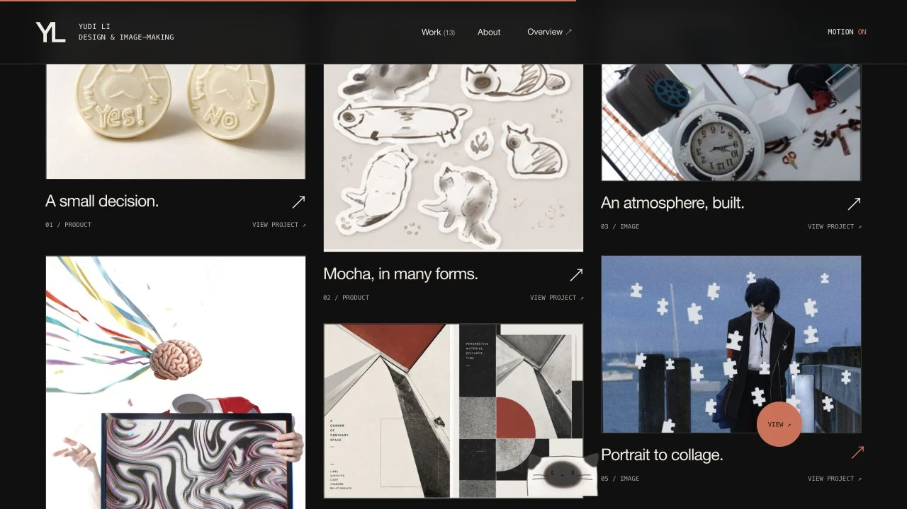

One visual system.
I unified the interface around black, warm white and terracotta. This gave navigation, project cards and the contact section a shared identity while allowing the artwork to retain its own colours.
WEBSITE CASE STUDY / DESIGN & IMAGE-MAKING
How I turned a collection of work into a personal website — through sketching, making, comparison and revision.
EXPLORE THE LIVE PORTFOLIO ↗
01 / INITIAL IDEA
I am a Bachelor of Design student at the University of Auckland, developing a practice around product design and photography, supported by illustration, typography and image editing. I wanted my portfolio to show how these interests connect, rather than present them as unrelated activities.
My value proposition is to connect objects, images and identity: developing an idea through physical form, photography, graphics and digital presentation. The website needed to make that connection visible while giving each project enough space to keep its own character.
I imagined the audience as people discovering my practice for the first time. They should be able to understand who I am, find a project, look more closely at its development, and reach my contact details.
My starting question: how can a clear structure leave room for something playful, tactile and unexpected?
02 / REFERENCE, SKETCHING & MAKING
I explored portfolio references for image rhythm, typography and navigation. I was drawn to floating work frames and layouts that preserve different image proportions. I wanted the work to feel like a collection visitors could explore, rather than a long sequence of identical images.
I began with hand-drawn wireframes. These mapped an opening, floating work frames, a clickable index, project details and a closing contact screen. A separate sketch explored a Yes–No coin and a cat moving with the page.

In Figma, I organised finished outcomes alongside development images and reflections. Comparing saved versions helped me decide what each project needed to communicate. Product studies, photography, composites and painting could then share a consistent presentation structure.
I used Codex to help translate my direction into website code. I supplied the artwork, references and feedback, reviewed the results, and directed the revisions. My responsibility was to choose the content, make design decisions and assess whether the implementation matched my intentions.
03 / ITERATION & DESIGN DECISIONS
The early version felt too much like a long editorial article. Some elements were too large, and changes in background colour made the sections feel disconnected. I realised that simply saying the style felt wrong did not explain what needed to change. I had to describe hierarchy, spacing, image rhythm and interaction more precisely.
I unified the interface around black, warm white and terracotta. This gave navigation, project cards and the contact section a shared identity while allowing the artwork to retain its own colours.
I reduced the biography and moved a smaller “Yudi Li” beside the portrait. I removed week labels from the website so visitors could focus on projects rather than the course timeline.
I used a varied card layout and preserved image proportions. Project cards can be opened as larger images, making process material easier to examine.


I also refined the smaller interactions. The opening now reads simply “Loading”. Mocha, my cat, follows scrolling instead of moving independently. The Yes–No coin gives a direct response, connecting a physical product idea with a small digital gesture.

04 / FINAL OUTCOME
The completed website brings together Mocha products, Halo photography, composites, collage, painting and graphic studies. Visitors can explore a floating gallery, browse the work index and open project cards as larger images.
The personal profile includes my portrait, a short introduction, my value proposition and clear contact details. A downloadable CV supports the profile. I published the website on GitHub Pages so I could share it using a direct portfolio address.

05 / PERSONAL REFLECTION
I learned that making a portfolio is an editing task, not just an uploading task. Adding more content or movement does not automatically make the work easier to understand. I needed to choose what deserved emphasis and what could become quieter.
Comparing versions made this visible. The oversized name competed with the portrait, and a cat that moved by itself drew attention away from the work. Reducing the type and linking the cat to scrolling helped the interactions feel more connected to the page.
Working with Codex also taught me to communicate design decisions more precisely. References and screenshots were useful, but I still had to explain what I wanted to preserve, what felt wrong, and why a change would help the visitor. I reviewed the output and continued directing the revisions.
The website is live, but I have not yet documented audience testing. My next step is to ask people to find a project and my contact details, observe where they hesitate, and check image readability and navigation on mobile. I will use that feedback to guide the next iteration.
A portfolio can be a record of a developing practice — showing not only what I make, but how I learn to communicate it.
YUDI LI / UNIVERSITY OF AUCKLAND
Authorship / artwork, references, layout direction and design decisions by Yudi Li. Codex assisted with analysis, writing refinement and website implementation. Screenshots document recorded iterations; audience testing remains a next step.
BACK TO THE PORTFOLIO ↗